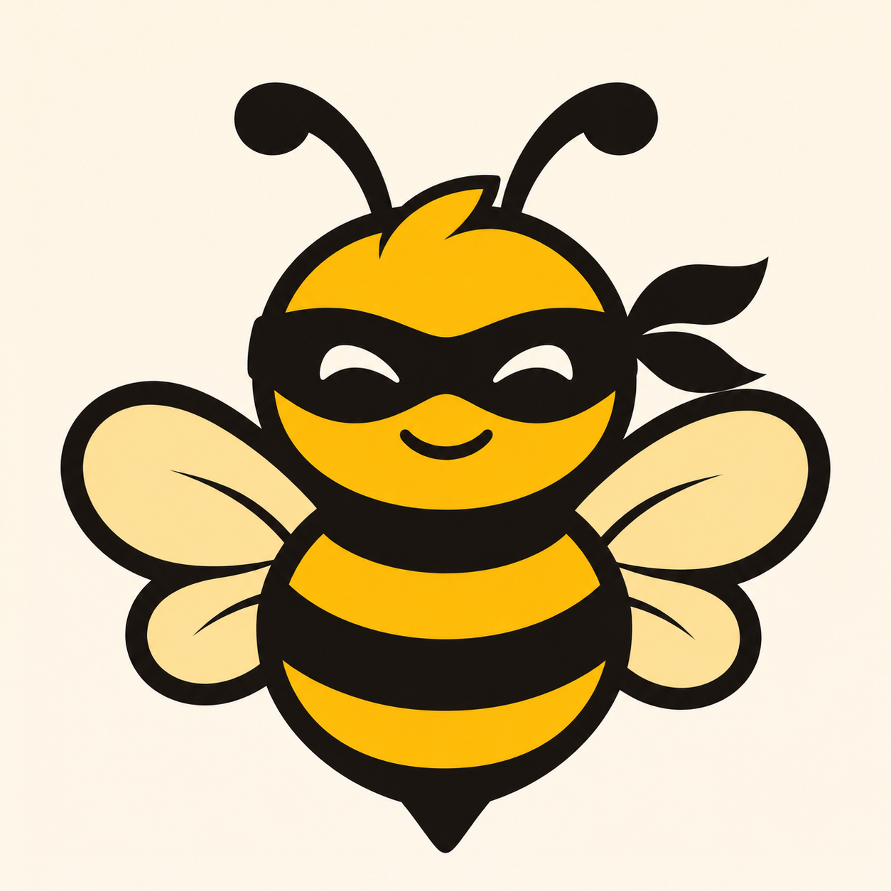

01 — YOU
Ask locally
Your browser sends a request to a Nym client running on your laptop.

SwarmAnon.SwarmAnon is an experimental gateway that brings Nym’s mixnet to Swarm content—so a request can reach the gateway without a direct connection from your device.
Swarm makes content addressable. Nym helps transport requests through a mixnet. SwarmAnon connects the two with a gateway that has its own Nym address.
Your browser sends a request to a Nym client running on your laptop.
The client addresses the SwarmAnon service over Nym and receives its reply.
Our gateway can resolve an ENS name and asks its Bee node for the content.
Bee retrieves content from Swarm peers; the response follows the Nym path back.
Content may be decentralized, but the way someone requests it can still expose information. We’re exploring a more private route to an ordinary Swarm gateway.
The service runs a Nym client and receives traffic addressed to it. Its gateway and Bee API stay on a private Docker network.
The gateway sees the requested content, and an ENS RPC sees name lookups. Content and browser behavior can still reveal information; this prototype is not an anonymity guarantee.
Run the Docker stack and connect a laptop client to the service’s Nym address. Then open a Swarm reference or an ENS name from your browser.
Read-only prototype · 2 MiB response limit · Bee ultra-light free-tier limits apply.
The local Nym client is required. The service’s Nym address is not an ordinary HTTPS URL.
Explore the architecture, code, and setup instructions.